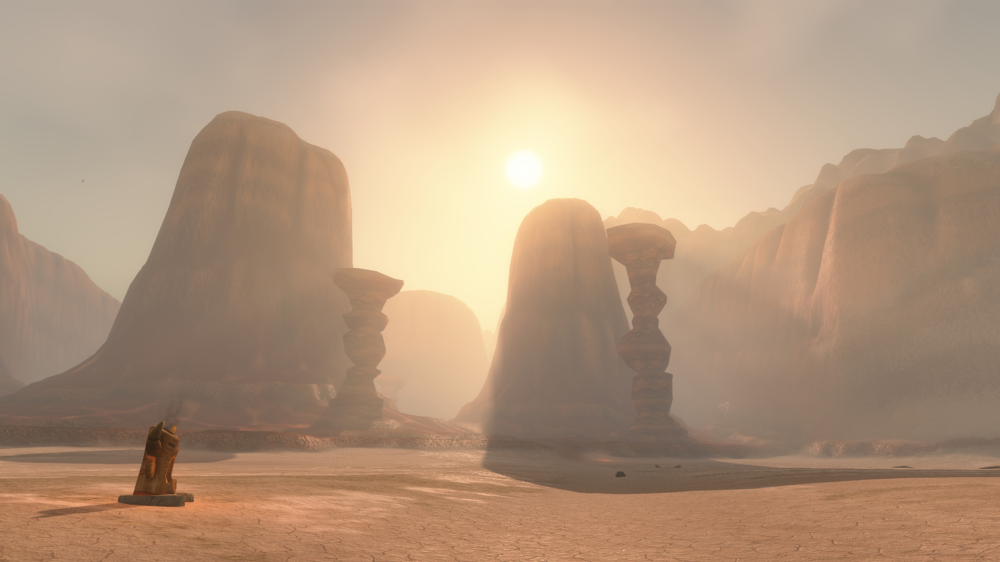

Запись первая. Хорошая идея
Узнал, что где-то в Восточных королевствах можно раздобыть отличный походный спальный мешок.
Вещь полезная. Особенно для того, кто много путешествует пешком.
Правда, для его получения придётся посетить несколько довольно далёких мест.
Посмотрел карту.
Подумал.
Решил идти.
В конце концов, я давно хотел посмотреть на другие земли. Да и спальный мешок сам себя не добудет.
Запись вторая. Тернистая долина
Первый этап путешествия потребовал довольно долгого заплыва.
Вода была тёплой. Берега — красивыми. В некоторых местах приходилось держаться подальше от поселений Альянса.
У одного маяка встретил ночную эльфийку с питомцем.
Она долго смотрела на меня... Я плыл мимо. Думал - разойдемся.
Потом она всё-таки отправила питомца за мной.
Умер. К счастью, преследовать дальше она не стала, и я смог продолжить путь.
Позже меня убил мурлок.
Начинаю подозревать, что местные жители не очень любят путешественников.
Запись третья. Тысяча Игл
Удалось добраться до Тысячи Игл.
Здесь очень красиво.
Высокие скалы, широкие пространства, необычные каменные столбы. На закате всё становится золотистым.
Открыл несколько воздушных маршрутов. Пригодятся в будущем, когда смогу позволить себе путешествовать с большим комфортом.
Впереди Танарис, Лесоречье и Бесплодные земли.
Судя по карте, дорога будет долгой.
Но спальный мешок сам себя не найдёт.

Запись четвёртая. О местных птицах
Встретил канюков.
Первые по ощущения были почти в два раза опаснее тех, с которыми я привык сталкиваться.
Потом встретил настолько опасных, что почти буквально видел над их головами только обещание смерти.
Двое последних решили познакомиться поближе.
Я предпочёл отказаться. И бежал.
Долго. Очень долго.
К счастью, птицы в конце концов потеряли интерес.
Кажется взять щит, который почти полностью прикрывал мою спину, было замечательной идеей.
Впрочем, основную работу всё-таки сделали ноги.
Запись пятая. Кабан
Сегодня встретил огромного кабана.
По ощущениям - сильнее меня раза в два, моё пока еще хилое тельце ему явно на один или два укуса.
Он стоял совсем рядом и спокойно занимался своими делами. Я тоже спокойно занимался своими.
Никто никого не трогал.
Приятная встреча.
Побольше бы таких.
Запись шестая. Волки
В Бесплодных Землях меня загрызли волки. Трое сразу.
Не успел убежать.
Очнулся на кладбище и обнаружил, что оно расположено ближе к цели, чем место моей смерти.
Неожиданно удобно.
Воскрес у целительницы душ.
После этого обнаружил, что штаны практически пришли в негодность.
Возможно, волки пытались съесть именно их.
Не знаю, чем они им так понравились
Запись седьмая. Каргат
Добрался до ордынской заставы Каргат.
Нашёл орчиху по имени Шранда, которая согласилась починить моё снаряжение.
За десять серебряных.
Десять!
За штаны.
«Грабёж», - сказал я.
«Так нужны штаны или нет?», - уточнила она.
Заплатил.
Теперь у меня осталось семьдесят серебряных и снова есть приличная одежда.
Считаю, что положение улучшилось, но кошелек со мной не согласен.
Запись восьмая. Неудачная картография
Дальнейшее путешествие оказалось непростым. Кажется я успел невзлюбить Бесплодные Земли.
Меня убил кайот.
Новое кладбище снова оказалось подозрительно ближе к цели.
Вернулся к жизни, но чувствовал сильную слабость и решил её переждать, заодно посмотрев карту, чтобы выбрать дальнейший путь.
Пока смотрел, меня загрыз другой койот.
Когда снова оказался в мире духов, слабость от предыдущего воскрешения уже прошла.
Не уверен, что это можно назвать выздоровлением.
Но определённый прогресс есть.
Запись девятая. Лок Модан
Добрался до Лок Модана.
Здесь удивительно зелено.
После Бесплодных земель особенно приятно видеть траву, деревья и воду.
Местные звери примерно равны мне по силе.
Равны!
Впервые за долгое время встретил противника, с которым действительно мог бы справиться.
Почувствовал себя значительно увереннее.
Потом вспомнил, что нахожусь на территории Альянса.
Решил не злоупотреблять уверенностью.
Запись десятая. Плотина
Добрался до огромной плотины.
Впечатляющее сооружение. Хотелось бы рассмотреть его подробнее.
Но местный стражник был против.
Мне почти удалось убежать от него, когда появился другой путешественник из Альянса.
Очень сильный.
В итоге я умер прежде, чем успел что-либо предпринять. Шестая смерть.
Вернулся с кладбища.
Рядом оказался тролль-охотник, который был намного опытней меня, пришедший по тому же делу.
Он некоторое время смотрел на меня. С недоумением.
Я не стал объяснять, как сюда добрался.
Забрал нужную находку.
Хороший день. Если не считать смерти.

Запись одиннадцатая. Домой. Ненадолго
Вернулся в Оргриммар.
Как приятно снова оказаться среди людей, которые не пытаются меня убить.
Проверил карту. Следующая цель — Стена Торадина, в Предгорьях Хилсбрада.
На другом конце Восточных королевств.
Вспомнил про спальный мешок, которого у меня всё ещё нет.
Вздохнул.
Отправился к дирижаблю.
Запись двенадцатая. Озеро Лордамер
Переплываю озеро Лордамер.
Вода прохладная, берега красивые.
Местные озёрные бешенки пытались меня покусать. Но после смертельно опасных канюков «с черепками» это почти приятно.
Удалось оторваться.
Впереди Даларан. Говорят, там живут могущественные маги.
Надеюсь, они не заинтересуются мной.
Запись тринадцатая. Маги и львы
Маги заинтересовались. Стреляли огненными шарами.
К счастью, удалось убежать.
К несчастью, почти сразу встретил трёх горных львов.
Они оказались значительно настойчивее магов. Седьмая смерть.
Очередное кладбище снова приблизило меня к цели.
Удивительная система путешествий. Надо будет узнать, кто её придумал.
Снаряжение, правда, выглядит всё хуже. Особенно штаны.
...очень грустно, что на Мельнице Таррен нет никого, кто мог бы его починить.
Запись четырнадцатая. Стена Торадина
Добрался.
На стене стоял ночной эльф-охотник.
Судя по всему, очень опытный.
Рядом с ним был большой чёрный волк.
Я собирался пройти мимо, но попал в ледяную ловушку. В итоге мы с эльфом просто смотрели друг на друга.
Охотник рассмеялся.
Его волк внимательно смотрел на меня, явно с гастрономическим интересом.
Вспомнил предыдущие встречи с волками. И с Альянсом.
Подумал, что сейчас, вероятно, умру.
Поэтому как только ловушка закончилась, просто решил сесть, в ожидании финального удара.
Охотник посмотрел на меня.
И тоже сел.
Некоторое время мы просто сидели на стене.
Волк тоже продолжал смотреть и похоже, он был совсем не против перекусить.
Но охотник ничего ему не приказал.
Так прошло минуты две.
Затем ночной эльф поднялся и помахал мне рукой.
Я помахал в ответ, встал и пошел дальше взбираться не стену, пока он не передумал.
Неожиданно приятная встреча.
Даже волк оказался неожиданно воспитанным.

Запись пятнадцатая. Спальный мешок
Я его нашёл!
Наконец-то.
После двух континентов, нескольких долгих заплывов, семи смертей, бесчисленных попыток меня съесть и десяти серебряных за ремонт штанов... Пока десяти - последний раз я еще не "чинился".
У меня есть спальный мешок.
Некоторое время просто смотрел на него, потом убрал в сумку и поспешно вернулся в Оргриммар.
Не хотелось испытывать удачу ещё раз.
Запись шестнадцатая. Расходы
В Оргриммаре отнёс снаряжение в ремонт.
Тринадцать серебряных. Снова.
К счастью, вместе со спальным мешком удалось раздобыть немного денег. Пересчитал оставшееся. Один золотой и двадцать восемь серебряных.
Странно. Отправился за спальным мешком, семь раз умер, дважды ремонтировал снаряжение... И вернулся богаче.
Пожалуй, неплохое путешествие.
Последняя запись. Отдых
Сегодня наконец воспользовался спальным мешком.
Удобный. Лежал и вспоминал дорогу.
Красные скалы Бесплодных земель.
Золотистое солнце над Тысячей Игл.
Зелёные холмы Лок Модана.
Тихую воду Лордамера.
И ночного эльфа на стене. Интересно, почему он меня отпустил?
Может быть, просто не захотел убивать. Может быть, ему было смешно.
А может, он тоже любил сидеть на высоких стенах и смотреть вдаль?
Не знаю. Но я рад, что встретил его.
Пожалуй, однажды стоит снова отправиться в те края.
Только сначала немного подрасти.
И накопить денег.
...и купить запасные штаны.